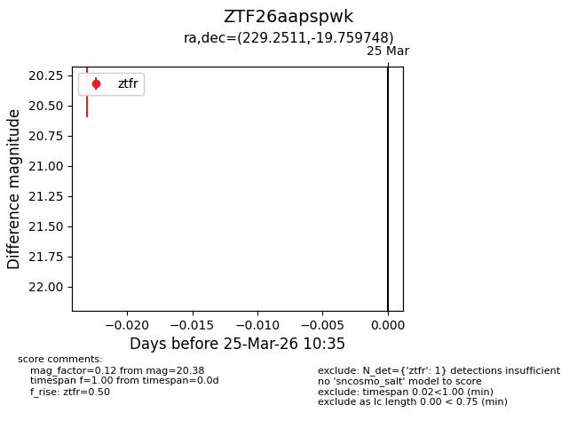
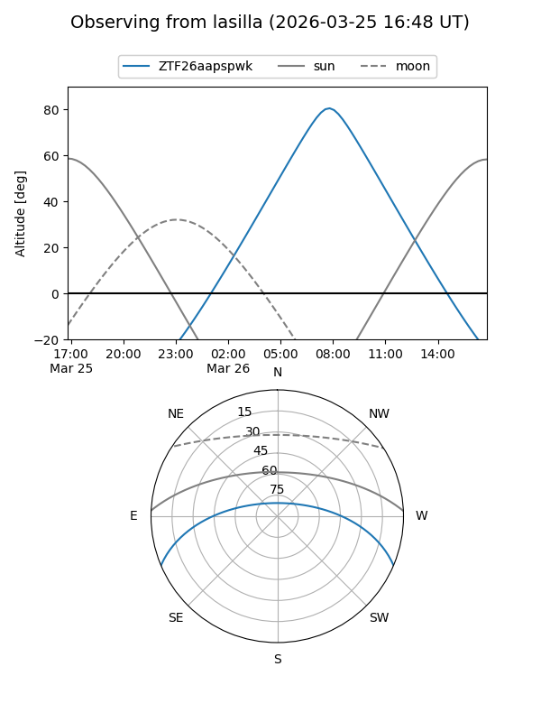
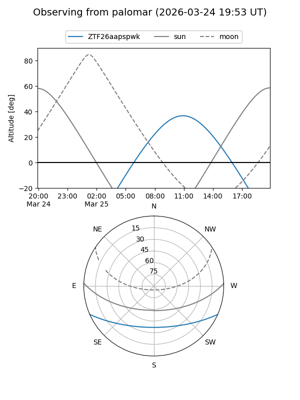
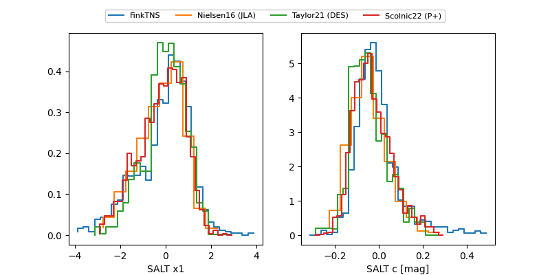

ZTF26aapspwk
Target ZTF26aapspwk at 2026-03-25 10:38
Aliases and brokers:
FINK: link
Lasair: link
ALeRCE: link
alt names
ZTF26aapspwk (ztf,fink_ztf)
Coordinates:
equatorial (ra, dec) = 229.2511,-19.75975
equatorial (HMS+DMS) = 15:17:00.27,-19:45:35.09
galactic (l, b) = (343.7558,+31.33770)
Flags:
Photometry:
last ztfr=20.38
1 ztfr detections
Lightcurve

Visibility


Additional plots
